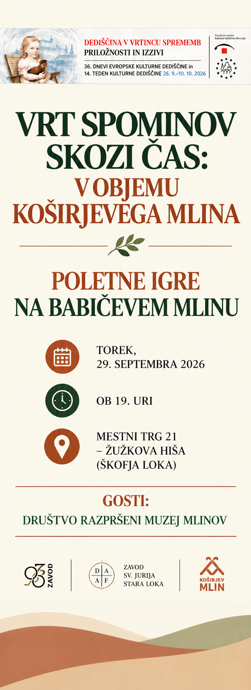

Poltne igre na Babičevem mlinu
Datum dogodka: Torek, 29. september 2026 ob 19. uri
Lokacija: Mestni trg 21 – Žužkova hiša, Škofja Loka
Dogodek poteka v okviru 36. Dnevov evropske kulturne dediščine in 14. Tedna kulturne dediščine. V ospredju bodo zgodbe, spomin in pomen mlinarske dediščine v objemu Koširjevega mlina.
Gostje: Društvo razpršeni muzeji mlinov
Organizacija: Zavod sv. Jurija Stara Loka, Koširjev mlin